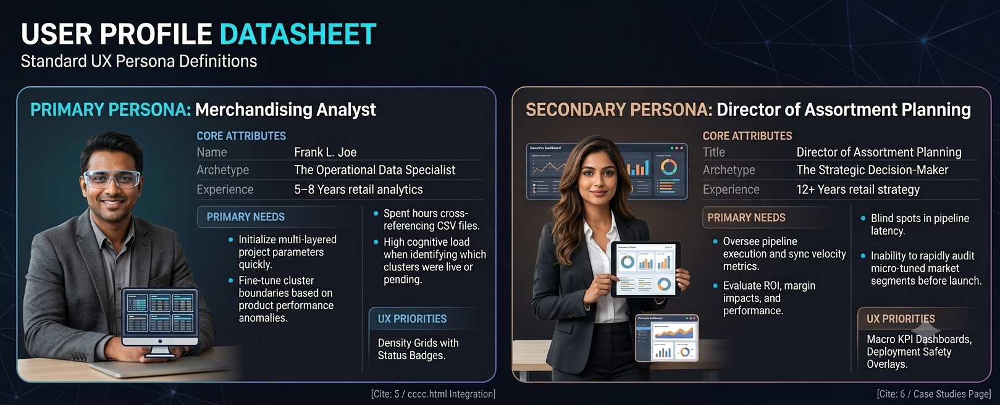
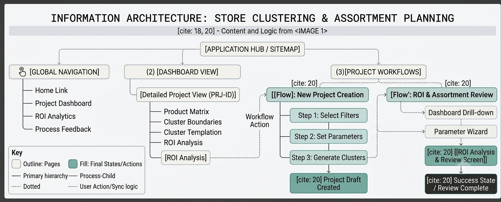
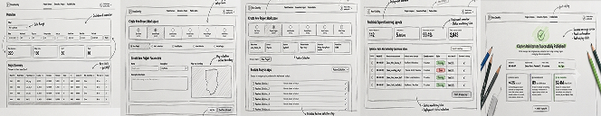

The Challenge
Large-scale US retail enterprises handle complex spatial and inventory allocation matrices. Previously, merchandising specialists and business analysts relied on disconnected legacy spreadsheets to manually cluster stores and push assortment updates. This disjointed approach led to margin leakage, excessive markdowns, and a total lack of end-to-end status visibility across regional nodes.
The objective was to design a unified, high-performance analytics interface—The Store Clustering Analytics Suite—that allows analysts to seamlessly initialize projects, review automated matrix models, and confidently deploy optimized localized assortments to production environments.
User Research:
Methodology & Deep-Dive
The Contextual Enquiry
To deeply understand the real-world workflow of store clustering and assortment planning, we conducted contextual inquiry sessions with 8 internal retail analysts. This involved observing their process, tools, and environmental challenges.
Observation & Data Gathering (The 'What')
- During live planning sessions. Observed analysts in their natural workspace (desk environment).
- Documented the use of primary tools (Excel, Word, SAP, internal legacy systems).
- Mapped the physical and digital workflow, noting environmental factors influencing decisions.
Analysis & Interpretation (The 'Why')
- Conducted immediate follow-up debriefs to understand the 'why' behind specific observed actions.
- Uncovered internal heuristics and tacit knowledge used for complex decisions.
- Validated initial findings with participants to ensure accurate interpretation of observed behaviors.
Key User Stories & Needs
Define:
Understandings and Insights
By tracking emotional highs and friction thresholds across tasks, we translated cognitive needs directly into low-fidelity conceptual blocks before refining components.
Phase A: Setup Exploration
Analysts struggle with initialization constraints. Fast sketching targeted flexible parameters configuration layouts.
Phase B: Auditing & Trust
Ensuring visual safety feedback mechanisms before data sync sequences execution happens.
User Profiles
| Persona | Primary Needs | Pain Points |
|---|---|---|
| Senior Merchandising Analyst |
|
|
| Director of Assortment Planning |
|
|

The Problem Statement:
Managing Enterprise Data Density
Retail planning teams lack a centralized, collaborative platform to manage the lifecycle of store clustering projects. Without a unified system, teams struggle with tracking project history, comparing forecasted performance, and ensuring stakeholder alignment, leading to suboptimal assortment decisions and slow response times to market shifts.
Key Friction Points
The "Black Box" Deployment Anxiety
Because data is manually extracted and shared via email, users lack visibility into exactly how or where their cluster logic is being routed into downstream execution systems, causing massive hesitation during final handoffs.
Status Ambiguity
Managing live, draft, and approved cluster configurations across scattered Word and Excel attachments creates an environment of high ambiguity, frequently leading to teams working out of outdated files and duplicating effort.
Context Fragmentation
Switching between micro-level cluster adjustments and macro-level pipeline health disrupted user focus and task completion.
Solution & Intuitive User Flow:
The Conclusions
Structured Information Architecture
Replaced the scattered document structure with a linear digital workspace divided into clear phases: Project Initialization, Assortment Configuration, and Forecast Review.
Macro-KPI Infrastructure & High-Contrast Dark Theme
A top-level dashboard layer instantly exposes pipeline velocity (99.4%) and active optimized nodes (2,840). Implemented a dark-mode analytics suite specifically tailored to reduce optical fatigue.
Progressive Disclosure Canvas
Transformed massive, flat Excel tables into interactive, responsive data views using clean pagination, scannable status badges, and structured inline actions to avoid workspace clutter.
Intuitive User Flow Mapping
Information Architecture

Ideation
Shaping the Idea
User Flow Diagram

LowFI

High Fidelity Prototype Screens:
The Refined Product Suite
Production-ready design patterns integrating heavy parameter density systems with clean visual hierarchies, micro-interactions, and distinct statuses language.

Usability Metrics & ROI, Impact:
Data-Backed Verification Loops
Following a 4-week beta rollout, the new system architecture was validated using quantitative system telemetry and qualitative usability testing.
| Metric Measured | Legacy System | Optimized Interface | Improvement Delta |
|---|---|---|---|
| Task Completion Time | 8.5 - 16.5 hrs | 1.50 hrs | -11.0 Hours (-88.0%) |
| System Usability Scale (SUS) Score | 42.5 / 100 | 84.5 / 100 | +98.8% - Excellent Grade |
| User Error Frequency Rate | 22.5% | 2.8% | -19.7% Drop in Errors |
| First-Time Task Success Rate | 55.0% | 96.5% | +41.5% Success Rate |
Macro Business Impact
Fulfillment Synchronization: Pipeline sync velocity sustained at an optimal 99.4% performance efficiency.
Bottom-Line Revenue Metrics: The system achieved a direct +4.2% margin lift and an 18% turn acceleration by aligning hyper-localized assortments with core market demands, yielding an annualized lift of +$2.4M.
99.4%
Sync Velocity
+4.2%
Margin Lift
+$2.4M
Annualized Lift